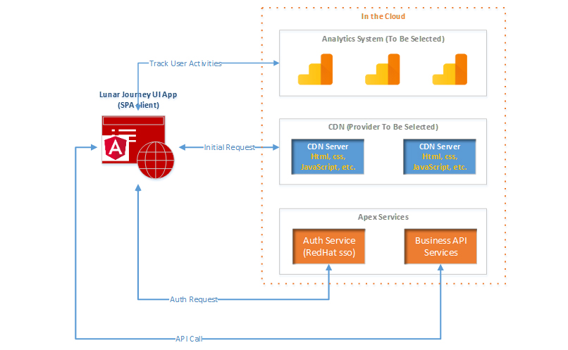
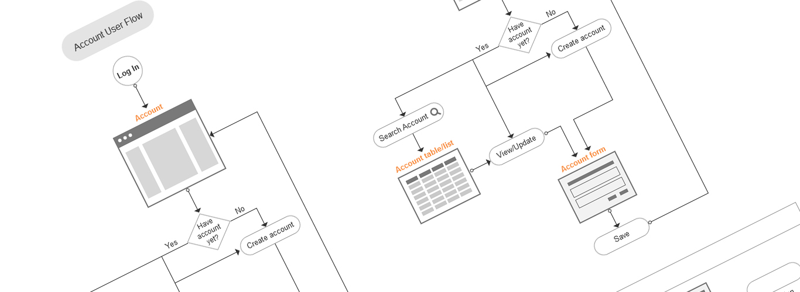
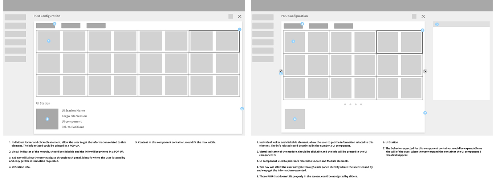
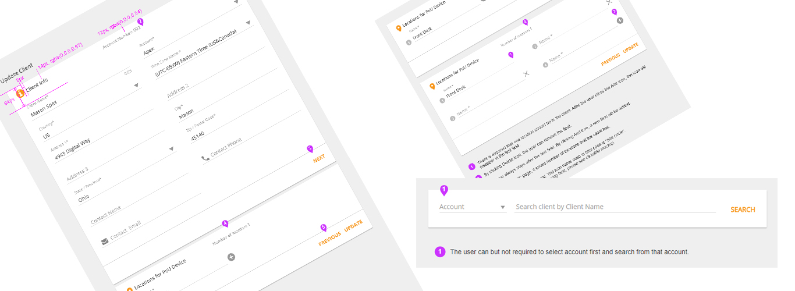
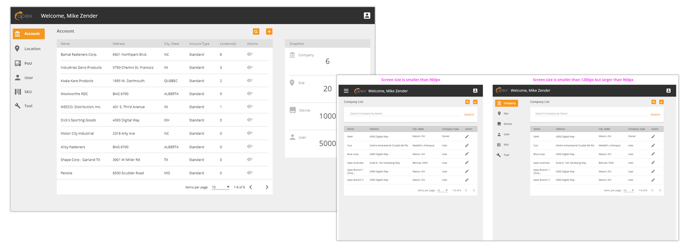

With real-time visibility and 24/7 control, you can significantly enhance your supply chain performance. Apex Trajectory™ Cloud is a powerful, enterprise-grade platform that provides immediate insight into your inventory, equipment, tools, products, parcels, and orders—tracking the who, what, when, where, and why of every asset.
The existing Trajectory web applications were designed nearly a decade ago for desktop PCs. Since then, web application design has evolved dramatically, driven by the explosive growth of tablets and smartphones. These hand-held devices have redefined UI/UX standards in the software industry, necessitating a modernized approach that meets current user expectations.

The Lunar Journey UI Core App is a modern web application tailored for both Lunar Journey’s customer support team and its customers. This solution facilitates the seamless management of accounts, clients, and point-of-use (POU) devices. Key functionalities include:
Building on comprehensive user investigations provided by Apex, our team collaborated closely through multiple meetings to inform the design process. Our UX approach included:



The outcome is a responsive web application that delivers an intuitive, efficient, and modern user experience. This solution not only meets the demands of today’s mobile-driven environment but also positions the Lunar Journey UI Core App as a key asset in enhancing customer support and operational efficiency.
